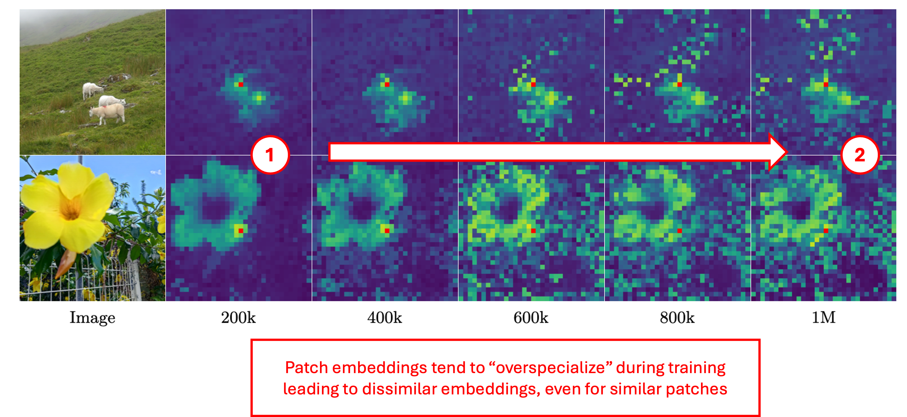

Overfit#12: DINOv3
Motivation
Self-Supervized Learning is a promising avenue for training large text/image/video general embedding models. SSL leverages huge datasets of unannotated data leading to more general models with emerging properties.
NLP scientists showed that scaling data and compute leads to stronger and more powerful models. Yet in the image field, despite datasets getting larger and larger, scaling beyond the 1B-parameter frontier has not yet been as successful.
In fact, many scaling attempts showed that global features keep improving with scaling (image-level representations), but that local features tend to degrade with scaling. In other words, scaling leads to better embedding models for image-level downstream tasks like classification, but it doesn't work as well for patch-level downstream tasks like segmentation (see the figures below).

(purple) Segmentation performance on VOC.
Image from DINOv3 paper.
Note
In this post, I will focus on the additions of DINOv31 and give special attention to Gram Anchoring, a simple regularization loss, that helps mitigate these issues. I already covered DINOv22 in details in a past post. If you are interested, I recommend having a look: DINOv2 post 🦖🦖.
DINOv3 is DINOv2's extension
Let's start by summarizing DINOv2 ...
DINOv2 uses a discriminative training procedure. At training, two random crops are extracted from each image. Each crop is fed through a student/teacher model. The student goal is to minimize the distance between the two view embeddings, at image-level \(\mathcal{L}_{DINO}\) and at patch-level \(\mathcal{L}_{iBOT}\). The teacher is derived from the student using an EMA of its weights. DINOv2 also uses a Koleo regularizer \(\mathcal{L}_{koleo}\) to encourage features within a batch to spread, and SwAV centering.
This gives rise to a multi-term pretraining loss:
The Meta team reuses the exact same DINOv2 loss to pretrain DINOv3. But ...
DINOv3 is essentially applying scaling laws to DINOv2: 10x more data (~100M images \(\rightarrow\) ~1000M images), and 7x more parameters (1B \(\rightarrow\) 7B). When scaling up DINOv2, the research team made two observations:
-
At mid-training (~200k steps), patch-level similarities are already well structured.
At this stage, similar patches have similar embeddings. They may not be perfect embeddings that compress all patch information, but their similarity relationships are meaningful.
-
As training progresses toward 1M steps, global features continue to improve, but local similarities start to collapse.
At end-training, similar patches have less similar embeddings. The feature map has somehow degraded.

\(\rightarrow\) What we need is a way to enforce similar patches to keep their embeddings similar.
But we have no labels... so how can we do that?
Gram Anchoring
In DINOv3, Meta introduces Gram Anchoring, a regularization technique to enforce feature maps to remain smooth, even when scaling up model size. As we'll see, Gram Anchoring is surprisingly simple. To explain it, let’s first introduce the Gram Matrix.
Gram Matrix
Let \(A\) be an image. Let's divide it into \(N\) patches (like in Vision Transformers) and let's compute their embeddings \(v_1, v_2, \dots, v_N\).
The Gram matrix \(G \in \mathbb{R}^{N \times N}\) is defined as:
This matrix captures the relative similarities between patches, independent of absolute positions.

Image from Wikipedia.
Intuition
Why is this Gram Matrix useful?
At ~200k steps, patch similarities are at their best: they reflect meaningful relationships between parts of an image. So here is the idea:
- Use the Gram matrix of an earlier checkpoint as a reference.
- Regularize the student so that its patch similarity structure remains close to this reference, even at later stages of training.
This way, the student can continue improving features while preserving local consistency. Gram Anchoring constrains similarities rather than raw embeddings.
Gram Anchoring Loss
We are doing Deep Learning, so we need a loss. Let's rephrase our intuitions in mathematical terms.
At a given step \(t\), we store the teacher’s Gram matrix \(G^{teacher}_t\) and enforce the student to maintain a similar patch similarity structure:
This acts as an anchor: the student can freely learn new features, but patch-level relations cannot drift too far.
In DINOv3, this loss is only added after 1M training steps, during what is called a post-training phase. Surprisingly, the effect is immediate: the model recovers local consistency in a few epochs, without any degradation in global features (see the green curve in the figure below).

Other techniques are combined on top of Gram Anchoring to boost performance on higher resolution images (orange curve), while minimizing the training budget:
- Post-training at higher resolution (512, 768 instead of 256) helps learning how to embed larger images. It can be seen as context extension for LLMs.
- Upscaling images and then interpolating Gram matrices gives smoother references for the Gram loss.
- RoPE-box jittering: basically adding noise in ROPE embeddings to get a more robust model at varying input sizes.
Key takeaway
Gram Anchoring is a constraint that forces the student’s patch similarity to imitate that of a past checkpoint. The 1M-step student embeddings can evolve freely, but their patch similarity structure remains close to the reference, preserving local consistency.
Model distillation
If you don't have the compute resources to run the 7B model, don't worry! Meta also released distilled ViT and ConvNeXT checkpoints in a wide range of sizes (from 29M to 7B parameters).
A particularly clever contribution of the DINOv3 paper is its multi-student distillation strategy. Traditionally, student models are distilled one at a time, which requires repeated and expensive queries to the teacher. Instead, DINOv3 trains multiple students in parallel, amortizing the teacher’s forward passes across them. This significantly reduces the overall compute cost.
On top of that, they optimize GPU allocation by adapting the number of GPUs per student according to model size, which minimizes idle time and ensures efficient utilization of resources.
Text alignment
Aligning visual embedding models with text means learning a shared embedding space for both modalities. Some methods, such as CLIP, retrain models from scratch, while others make use of pretrained backbones, frozen or fine-tuned.
Using the LiT training paradigm3, the authors of DINOv3 adopted the latter approach and aligned their ViT-L model with text. On global text–image alignment tasks, the model performs strongly, though it falls slightly short of the current state of the art, such as SigLIP2 and Perception Encoder.
Alignment can also be evaluated at patch-level using segmentation tasks. Due to its excellent dense embeddings, it is not a surprise to see DINOv3 give SOTA performance on such benchmarks.
Key Takeaway
The text-aligned DINOv3 is a strong candidate if you interested in zero-shot segmentation from text prompts.
If you are just looking for a general-purpose multimodal embedding model, CLIP variants such as SigLIP2 may be a better fit.
Image from DINOv3 paper.
Benchmarking
I won't cover the rest of the benchmarks in depth, because (1) it would be too long and because (2) the paper does it better. In a nutshell they show that DINOv3 is SOTA in most computer vision benchmarks: classification, detection, segmentation, 3D tasks, ...
The DINOv3 training recipe also shows strong performance on geospatial data and even sets the new state of the art on some benchmarks like SatLidar1M val, SatLidar1M test and Open-Canopy. Note that two satellite imagery checkpoints were published with the paper.

Concluding and key takeaways
- DINOv3 is the result of scaling the DINOv2 recipe on 10x more data and compute.
- Gram Anchoring appears as a simple yet efficient solution to the local embedding degradation observed in former scaling attempts. Its contrastive loss takes advantage of the high-quality early-stage local capabilities of the teacher.
- Scaling resolution at the end of the training is a good tradeoff to boost model performance/usability while limiting training costs.
- Meta's benchmarking work is seriously impressive.
References
-
DINOv3: Siméoni, O., Vo, H. V., Seitzer, M., Baldassarre, F., Oquab, M., Jose, C., ... & Bojanowski, P. (2025). DINOv3. arXiv preprint arXiv:2508.10104. ↩
-
DINOv2: Oquab, M., Darcet, T., Moutakanni, T., Vo, H., Szafraniec, M., Khalidov, V., ... & Bojanowski, P. (2023). Dinov2: Learning robust visual features without supervision. arXiv preprint arXiv:2304.07193. ↩
-
LiT: Xiaohua Zhai, Xiao Wang, Basil Mustafa, Andreas Steiner, Daniel Keysers, Alexander Kolesnikov, and Lucas Beyer. LiT: Zero-shot transfer with locked-image text tuning. In Proceedings of the IEEE/CVF conference on computer vision and pattern recognition, pages 18123–18133, 2022b. ↩